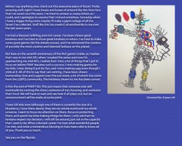

If you see any issues, please do make us aware via our Contact Form.
Thank you for browsing FNaFLore.com, we hope you enjoy the improvements that are coming to the site!
Oversaturation much?

The Franchise Should Be Retired, Not Scott
Hello all
I want to state, I have the upmost respect for Scott. We’ve disagreed, but regardless of my opinions on him, his views or his actions, he is a great guy, and his charitable nature is to be admired. I was one of, if not the, first to email him personally over the entire situation, just so he could have the most time to prepare.
But this news post will be one of critique and frustration. While I respect him, his reaction to the situation, while initially correct, has fallen totally flat, and I feel will damage the franchise and many of his followers. But perhaps most importantly, will leave Scott vulnerable well into the future.

{kind=link}
Let us all face facts. As much as I’m sure Scott wants us to think this is him just trying to be a more wholesome family man, this is not. This is Scott submitting to the braying mob, begging they stop sending threats his way and leave the community alone. This is a mistake, and it will poison the franchise far worse than if he had maintained his first line of action until after Security Breach released.
I for one think FNaF should have ended come FNaF3. It had a perfect end, the hat on the ground under a spotlight, it held imagery reminiscent of something akin to a single rose lying on an opera floor. A symbol, of sorts, of the end of an era and the close of the story. The franchise should have ended ages ago, and that it’s gone on, I feel, has cheapened it’s overall story.
But more to the point, I feel that the franchise ending in a grand finale would be far more palatable to the fandom than Scott handing it off to someone else. FNaF is simply not going to be the same under someone else’s leadership.
Scott stepping down has done a couple of things I find ultimately distasteful and self-destructive.
For one, to those journalists, it is an admission of defeat – and thus, in a sense, an admission of guilt. Scott will now forever be known as the “former” FNaF creator who “stepped down due to his far right views”. This is how journalism works in the ragebait era. They will take that line, that controversy, this “confession”, and store it. Then, whenever Scott so much as breathes on some new IP or game, his name will forever be prefixed with terms like “controversial”, “far right”, “republican” and so on. To step down will simply embolden them to bring up how he left the franchise every single time, in all the articles, all the tweets and news releases.
{kind=link}
Scott retiring is a scalp for these crazy people. It is a scalp that they shall wave whenever they can, because the media takes great pride in someone getting cancelled, and will crow about it until the end of time. This is how they measure their success, and Scott has decided that he will simply hand them the scalp they crave, free of charge. These people can say “We helped get Scott Cawthon cancelled”, parading around his corpse for all to see.
But this does more than forever taint Scott’s name in the video games “journalistic” world. It lets down the very people Scott purports to align himself with. There is currently an epidemic of cancelling across nearly all factors of Scott’s demographics. Religious cancelling, Republican cancelling, Game developer cancelling and so on. All these demographics being cancelled, because they step out of line with what the media deemed to be appropriate.
By resigning, Scott lets down all of these demographics, and all those identifying with any of those groups. Groups that are perpetually victimised for something as inconsequential as how to run the economy, how to handle immigration, how to portray people in video games, tokenising minority identities in videogames and so on. So many have been cancelled from the specific demographics Scott represents, and rather than show them you can step up to these bullies, Scott has carried his cross and even nailed himself to it.
He also lets down his own community, whom nearly uniformly expressed total solidarity. #IStandWithScott was trending, and even despite the crazed checkmark journalists and rabid identity political pundits, the sheer amount of support over anger is astounding. Now all these people are left standing by someone who won’t even stand for himself.
{kind=link}
Not only has he done this, but it solves nothing. It is all for naught. it won’t stem the tide of those sending him death threats. It tells these mad people that DEATH THREATS WORK, SO USE THEM MORE! By giving in to these lunatics, Scott tacitly tells them “yes, this worked, do it to the next person and it will still work”. His actions help to fuel death threats to the next republican game developer, or the next developer who dares express supposed controversial opinions on immigration, gender or religion.
The fact is, cancel culture does not go away with submission. It has so many scalps, this should be simple common sense. It gets emboldened. It goes higher. I can guarantee even at this moment, people are trying to cancel not just the creator, but the creation. Emailing Steel Wool, asking them to take a moral stand and cancel Security Breach. Emailing Illumix and telling them to discontinue Special Delivery. Probably trying to sabotage the fangame project through Clickteam. Contacting shops selling FNaF merch to get them to pull it from the shelves. Trying to get Funko to drop the pop vinyls. It doesn’t stop. It never will. It does get better if you stand up to it, but submit, and you hold that cloud over you forever. You will be demanded to make an apology, to bend the knee, every time you resurface. Submit, and you will be expected to do so again, and again, and again.
Scott’s first message was perfect, and while some screeched more, it signalled strength, principle, integrity. Not just to those trying to cancel him, but to his fans who may share the same political or religious alignment. To resign from FNaF deconstructs all of that. It perverts that, replacing the strength and integrity with weakness and shame. It leaves every supporter of Scott holding the bad. People trying to support you, when not even you support you. Downtrodden even further, and possibly at the cost of their friend groups in order to support you. All for nothing.
The fact is, I believe honestly and genuinely, Scott should revoke his retirement notice. He should state that he will remain, and will finish the franchise’s story. He’s already outsourced the development, he’s not got a lot to do beyond that. Lore stuff mostly, design work for the models and so on. Scott no longer develops FNaF, he has it developed and provides some art assets. A concluded FNaF with all the loose ends tied up would be infinitely more preferable than a continued FNaF with a different direction. This is an opinion I hold, and I believe so too does the community hold this opinion. You are integral to the FNaF franchise. It will dissipate with your departure, much like Minecraft and Notch.
After the first post made, I had no thought to put together any breakdown on this. After his second statement, I felt obliged to do so. Someone has to be the torch in the darkness for those people getting cancelled. Someone who will make a stand, say “I did nothing wrong, and I will stand my ground”. I can respect Scott not wanting to take that responsibility in order to protect his family. The intent is understandable. But submission, time and time again, has not worked. It only makes it worse. It validates the claims against you, and makes them easier to weaponise against you.
I was told by one person whom I ran this article by, that I seemed to lack empathy for considering putting up this article. I completely rebuke this for two reasons. For the first, I want Scott and his family to be safe, as much as anyone else in the community. Surrendering to the mob will not keep you safe, it will keep you vulnerable to them. I do not want to see Scott or his family left vulnerable because of good-intentioned attempts to compromise, with a force that seeks only compliance. For the second, Scott’s refusal to stand his ground leaves many more fans feeling dejected. Another person cancelled over their political ideology. Another reason to shut your mouth, if you know what’s good for you. I cannot in good conscience allow such a horrible message to exist unchallenged.
I feel this needs to be made to both implore Scott to not fall into this trap, and to tell those other people that you should NOT be silent over your views. If Scott will refuse to take that mantle, then I shall be all too happy to pick it up in his stead. To hell with those whom will try to cancel you or unfriend you, over basic opinions of political topics or religious views. I’ve lost several friends over such disagreements, and I’ve let them go. Not happily, with great sadness and pain. I recall them still, and wish them only the best of luck in their lives. But you cannot convince a zealot whom cannot comprehend an alternate view to be your friend. You must tell yourself, it was never going to last. You just have to let it go.
You should have no fear in expressing your political or religious views, and most importantly, never be repentant for such opinions. They are derived by your lived experience, why should you apologise for this? Even if you grow to change them, no-one is born with perfect opinions on politics, religion and so on. They change constantly through our life as we grow older and wiser. We’re all different people all through our lives, and that’s ok. That’s good. You’ve got to keep moving, so long as you remember all the people that you used to be. But never be ashamed of those people. They, you, are products of where you are and how you lived life. This is the message I want this article to convey to all those dejected by Scott’s cancelling.
Keep strong and true to yourself. Do not cling to old values for the sake of keeping them, but likewise, do not be apologetic to hold such views. Refine and review them regularly. Try to be as true to yourself as possible, and if people have an issue with that, let them go. If they attack or insult or dox you, block them and move on. Do not let someone bully you into being someone else, or compromising your view of reality so to believe things you think are nonsense, or worse, harmful.
 Scott, I implore you, revoke your message of resignation. Instead, finish the franchise and retire with dignity. This retirement is so clearly linked to the cancelling attempt, no-one thinks that you’re leaving because you want to – even if this was something you were already feeling when this all hit. Perhaps revive it in ten years or so if you want to return to it, or do little spinoff games now and then. But I feel certain that the community would rather you be here to finish the series you started, than to see you bend over for your critics and let some newcomer try to fill your shoes, all the while the sword of Damocles rests above their head. To hand off the franchise won’t just hinder it, it will put great pressure on your replacement. Will their twitter timeline be squeaky clean? Do they have donation records? Offensive Facebook jokes, skeletons in the closet? Their twitter history, political donation history and any other public records will be scoured by the mob, so they can claim another scalp right off the back of yours.
Scott, I implore you, revoke your message of resignation. Instead, finish the franchise and retire with dignity. This retirement is so clearly linked to the cancelling attempt, no-one thinks that you’re leaving because you want to – even if this was something you were already feeling when this all hit. Perhaps revive it in ten years or so if you want to return to it, or do little spinoff games now and then. But I feel certain that the community would rather you be here to finish the series you started, than to see you bend over for your critics and let some newcomer try to fill your shoes, all the while the sword of Damocles rests above their head. To hand off the franchise won’t just hinder it, it will put great pressure on your replacement. Will their twitter timeline be squeaky clean? Do they have donation records? Offensive Facebook jokes, skeletons in the closet? Their twitter history, political donation history and any other public records will be scoured by the mob, so they can claim another scalp right off the back of yours.
Please, do it for your fans who may share some of your views – or even those who hold unrelated but similarly persecuted views. People who see you getting cancelled, and keep their mouth shut and head down. Because if this can happen to you, it can happen to them. Your resignation validates their concern to exercise their freedom of speech. They will keep silent unless people speak out. I’ve done so, and met with some cancelling, but it is for the greater good. We cannot allow these bullies to run people into the ground for their opinions.
Please reconsider. Do not retire yourself, retire the franchise. Leave the franchise in a state of closure, and move onto the next series you desire to create. Your fans – your proper fans – are sure to follow you there. The franchise shall continue with fan content from the myriad of colourful characters you have made, and in time, perhaps a less charged time, the franchise will be ripe for revisiting.
I critique a lot of what you do. I think you’re shit at long-form storytelling, I think you were totally in the wrong to get The Dolls to change, I find the concept that Flumpty and Candy need to go through you to be sold to be outright ridiculous and quite frankly, I think you’re out of your fucking mind to think that mpreg in a FNaF horror novel was ever a good idea, rather than some insane fantasy land that detracts from the semi-realism you try to portray.
But above all of that, I think you’re an upstanding guy and I think you deserve all the respect you’ve earned, and the peace of a quiet personal life, free of threats. I disagree on issues of storytelling methods and law, but I respect you like I would any friend of mine. I want you and your family to come out of this the best you can.
Having followed cancel culture closely this last decade as a particular point of interest, trust me, this isn’t the path. This is the wrong path. Please reconsider. Close up the franchise instead, then move on. Do not let this insane mob claim you for a scalp.
In any case, I wish Scott – and the rest of you fine people reading – the very best. As per usual, I would invite those whom fear speaking out to join our Discord server. It isn’t a safe space (It is a public server), but it is an open space to share any views, with an active and heated political room and a specific ideology to not ban based on political opinion, but based on on-server behaviour. You’ll need to ask a mod to get to the room.
Keep safe. Speak free. Live life.
Kizzycocoa – Owner and designer of FNaFLore.com